cluely. cue.
open-source meeting assistant
Stealth overlay invisible to screen-share. Agent-driven answers wired to your model. Speech in, speech out. Local-first by default. Cloud opt-in per stage. A documented HTTP daemon under the GUI so any client can drive it — CLI, Raycast, OBS, your own.
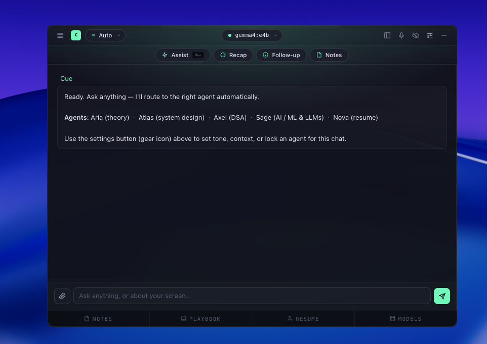
install & go.
no setup wizard, no signup, no card.
Three ways in: download the desktop app, install the Python CLI, or run from source. Each route ends with the same overlay and the same daemon. Pick what fits how you work.
Mac (DMG)
Apple Silicon and Intel. Drag to /Applications, open, paste your OpenRouter key, done.
Windows (EXE)
NSIS installer. Auto-creates desktop + start-menu shortcuts. Same onboarding as macOS.
Linux (AppImage)
Single-file portable build. Make executable, double-click to run. .deb also available for Debian / Ubuntu.
Python CLI
CLIOne pip install. Same daemon under the hood. Power users skip the GUI.
$ pip install cue $ cue init $ cue daemon start $ cue ask "design a rate limiter"
From source
DEVClone, run, hack. Apache-2.0 — fork freely.
$ git clone https://github.com/Suryanandx/cue $ cd cue/electron $ npm install && npm start # or build a redistributable $ npm run build:mac
// first launch shows an onboarding wizard — paste your openrouter key, or connect to local ollama. test, save, done.
cluely's feature set,
your control plane.
Same overlay UX as the closed-source incumbent. None of the lock-in. Every input, every output stays on your machine unless you wire it otherwise. Engineered for operators, not marketers.
Invisible to screen capture.
setContentProtection(true) on Mac and Windows hides the overlay
from screen-record + screen-share APIs. Always-on-top. Click-through optional.
Hotkey kill.
STT in, TTS out.
Speech-to-speech pipeline modeled on huggingface/speech-to-speech.
Optional Coqui XTTS-v2 voice-cloning — the AI whispers in your
voice through your earpiece.
Two providers, one router.
Ollama and OpenRouter side by side. Per-agent model. Auto-fallback on first error.
Every agent is a TOML file.
Five built-ins ship. Hot-swap via ⌘1-5. Override any prompt by
dropping a file in ~/.cue/agents/.
HTTP under everything.
FastAPI with OpenAPI at /docs. The GUI calls it. The CLI calls it.
Anyone can.
Strictly local, fully cloud, or anywhere between.
Run Ollama + on-device STT for zero-egress. Or route to OpenRouter for higher
quality. Or mix per-agent — coding on Sonnet, notetaker on local Llama.
The daemon binds to 127.0.0.1 by default; LAN-bind requires a
bearer token. No telemetry. Ever.
ollama. openrouter.
side by side.
Bring your own. Run interview-coding through Sonnet on the cloud. Run notetaker
on local Llama. Switch any time. cue model list
gives you both catalogues in one shot.
Ollama
LOCALOn-device inference. Zero egress. Free. The default for notetaker-class agents where latency < quality.
- llama3:8b — everyday default, ~30 tok/s on M-series
- mistral:7b — concise, fast, low-VRAM
- qwen2.5:14b — coding-strong
- any GGUF —
cue model pullpassthrough
OpenRouter
CLOUD200+ frontier models behind one API key. Used when quality matters more than privacy — live coding, system design, tough behavioral.
- claude-3.5-sonnet — flagship for coding + design
- gpt-4o — behavioral interview default
- gpt-4o-mini — cheap and quick
- llama-3.1-8b:free — the always-fallback
what it actually looks like.
Real screenshots from the latest build. Glass overlay. Hot-swappable templates, grouped Ollama + OpenRouter model picker, three-mode layout switcher, knowledge pane, full session settings.
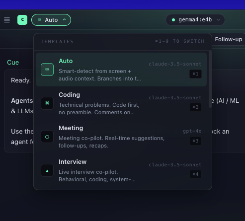
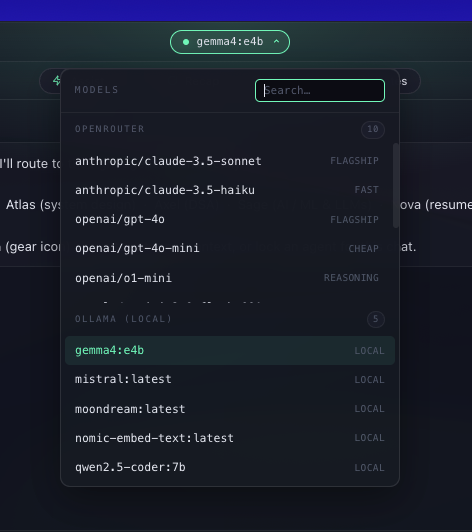
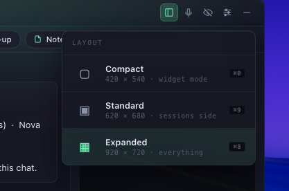
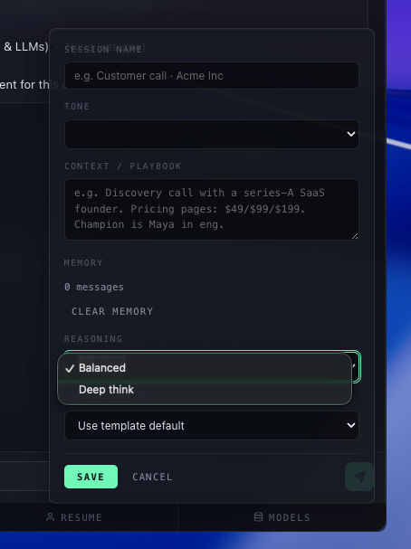
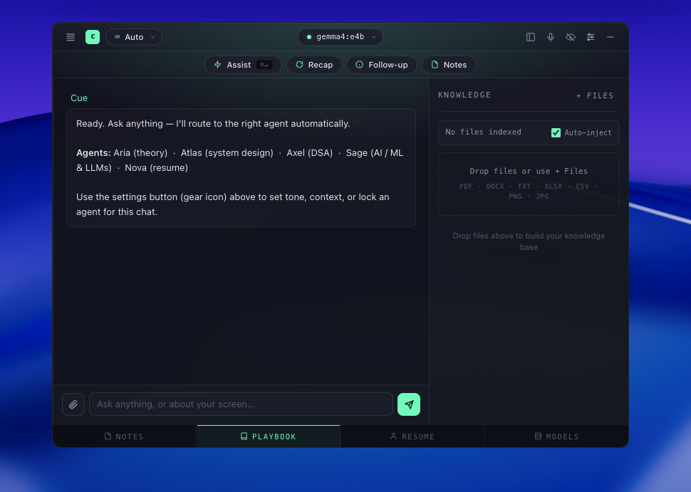
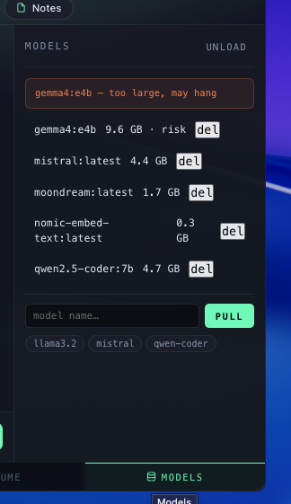
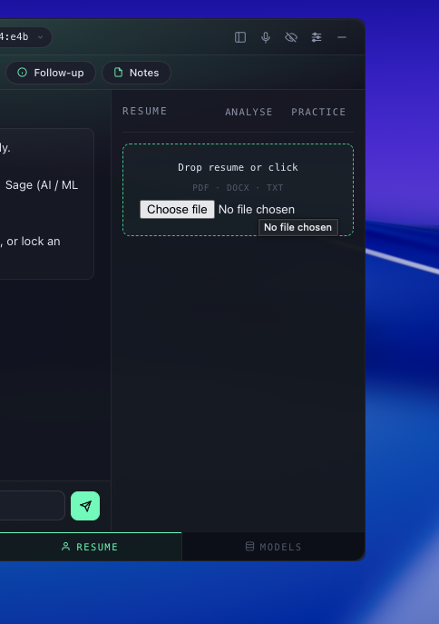
install & go.
no account, no card.
First launch shows a three-step wizard. Pick a provider, validate, you're in. Everything else is configurable later from the settings popover.
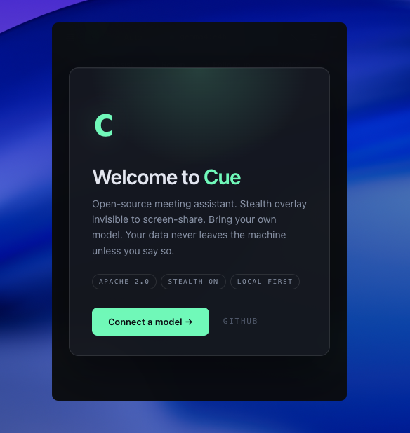
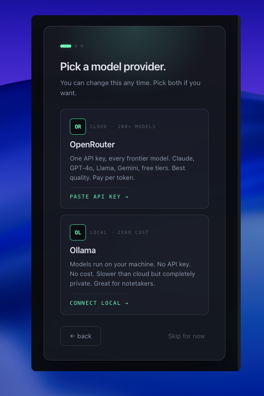
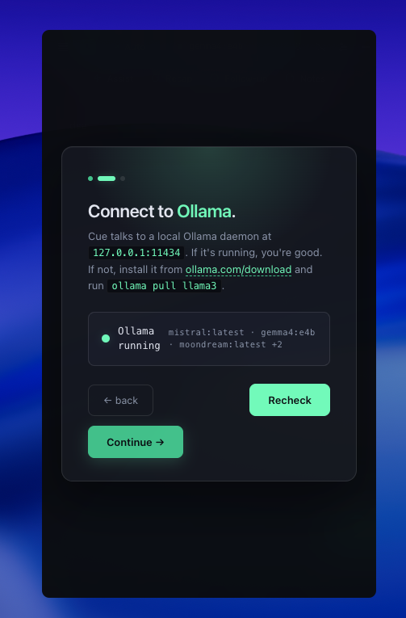
five agents,
shipped on day one.
Each one is a TOML file you can read, edit, share. Override the system prompt, change the model, set a hotkey, define KB scope. The daemon picks up your changes immediately — no restart.
install to first answer
in two minutes.
Install the package
pip install cue for daemon + CLI. Add cue[stt,tts,kb] later for the heavier optional engines.
Configure
cue init writes ~/.cue/config.toml. Drop in your OpenRouter key, or skip and run Ollama-only.
Ask
cue ask "talk about a hard project" streams an answer through the default agent.
Daemon up
cue daemon start exposes the full pipeline at 127.0.0.1:7821. OpenAPI at /docs.
Overlay
Run cue start for the stealth Cluely-style overlay. Or skip the GUI and stay in the terminal.
$ pip install cue collecting cue==0.1.0 ... ✓ installed $ cue init openrouter key: ******** ✓ Cue initialised config: ~/.cue/config.toml agents: 5 built-in daemon: 127.0.0.1:7821 $ cue ask "design a url shortener" interview-system-design · sonnet · 92ms restating: shortener with billion ops/day... 1) clarify: write QPS, read QPS, vanity? 2) capacity: ~10K writes/sec, ~100K reads/sec 3) diagram: client → edge cache → svc → kv ... $ cue daemon start ✓ daemon started $ cue start launched ./Cue.app · stealth: on █
a daemon under everything.
The GUI calls these endpoints. The CLI calls these endpoints. Anyone can.
OpenAPI docs live at /docs.
Default bind 127.0.0.1:7821.
LAN bind opt-in.
| // verb | // path | // purpose |
|---|---|---|
| POST | /v1/chat | SSE token stream through any agent + model |
| GET | /v1/agents | List built-in + user agents |
| POST | /v1/agents/:slug | Create or update an agent |
| DELETE | /v1/agents/:slug | Remove a user agent |
| GET | /v1/models | Both Ollama + OpenRouter catalogues |
| POST | /v1/stt | Audio in → transcript chunks planned · 0.2 |
| POST | /v1/tts | Text in → audio out planned · 0.2 |
| GET | /v1/sessions | Past session transcripts + answers |
| GET | /v1/health | Daemon + provider status |
cli-first. always.
The terminal is the source of truth. Run interviews from a tmux pane if you want. The GUI is one client; the CLI is another.
# lifecycle cue init first-run setup wizard cue daemon start | stop | status | logs manage the FastAPI daemon cue start launch the Electron overlay cue doctor diagnose providers, paths, agents # live cue listen [--agent <name>] CLI listening mode (textual TUI) cue ask "question" [--agent <name>] one-shot Q&A cue practice <agent> mock-interview TUI (0.2) # agents cue agent list / new / show / use / rm manage ~/.cue/agents/*.toml # models cue model list both ollama + openrouter cue model set <agent> <provider:model> per-agent override cue model benchmark rank by p50 latency from your network # config / privacy cue config get / set <key> [value] persistent settings cue stealth on / off screen-capture invisibility